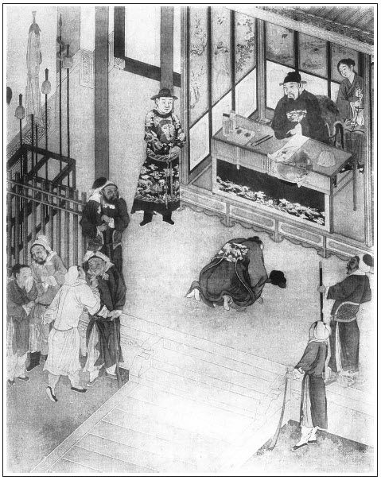

張回此回理應接敬濟到守備府矣，止因本意要寫熱結之弟兄為正意，今因貪寫假夫婦，遂致假兄弟之文不暢，亦末結。如上文，雖言伯爵背恩等情，卻未結言如何報應結煞，而亦未暢言其何以背恩，為世之假弟兄勸也。故此回且按下敬濟，再講月娘處。
夫西門死而月娘存，必為之描其炎涼，為一部冷熱之報。諸事已敘其大半，則亦宜收拾月娘矣。夫月必雲遮，固用雲理守之夢於一百回內，而不先以漸收之，又何以成大手筆哉！故用竊玉成婚，在吳典恩之前。蓋小玉者，月中之兔，今與中秋同事月娘。夫月至中秋，兔已肥矣，兔至肥時，月亦滿矣，盈虧之理，一絲不爽。月才當滿，已缺一線，漸缺漸缺。以至子晦而後已也。是故小玉才成婚，乃中秋月滿之時。而平安已偷金鉤於南瓦子內，蓋才滿一夜，早已如鉤照南瓦子上也。夫月之有無消息，當問梅花，故一求春梅，而吳典恩已被辱矣。復領出金鉤，則月尚有半邊，如月娘之守寡，為人之播弄不定，然月自是梅花主人。故又與春梅相往來也。
寫月娘之奉承春梅處，固是為西門慶冷處描，卻又是作者深惡月娘之陰毒權詐，奸險刻薄，而故用此等筆以丑之也。
玳安者，蝴蝶也。觀其嬉游之巷可知，觀其訪文嫂兒可知。文嫂者，蜂也。其女兒金大姐者，黃蜂也。蜂入林中，春光已老，故先用之以為敬濟作媒，則當金蓮正盛之時，而後用之於林氏也。蜂媒，必蝶使可訪。故用玳安。玳者，墨斑黃斑，所謂花蝴蝶也。
詩曰：
寺廢僧居少，橋灘客過稀。
家貧奴負主，官懦吏相欺。
水淺魚難住，林稀鳥不棲。
人情皆若此，徒堪悲復淒。

話說孫雪娥在洒家店為娼，不題。卻說吳月娘，自從大姐死了，告了陳敬濟一狀，大家人來昭也死了，他妻子一丈青帶著小鐵棍兒，也嫁人去了。來興兒看守門戶，房中繡春，與了王姑子做徒弟，出家去了。繡眉讀來覺一種淒涼之氣逼人。那來興兒自從他媳婦惠秀死了，一向沒有妻室。奶子如意兒，要便引著孝哥兒在他屋裡頑耍，吃東西。來興兒又打酒和奶子吃，兩個嘲勾來去，就刮剌上了，非止一日。但來前邊，歸入後邊就臉紅。月娘察知其事，罵了一頓。家醜不可外揚，與了他一套衣裳，四根簪子，揀了個好日子，就與來興兒完房，做了媳婦了。白日上灶看哥兒，後邊扶持，到夜間往前邊他屋裡睡去。張夾先為玳安、小玉一引。
一日，八月十五日，月娘生日。張夾月潤兔肥矣。有吳大妗、二妗子，並三個姑子，都來與月娘做生日，在後邊堂屋裡吃酒。晚夕，都在孟玉樓住的廂房內聽宣卷。到二更時分，張夾又是月娘自開端，不知作者必欲寫月娘十成惡何故。中秋兒便在後邊灶上看茶，由著月娘叫，都不應。月娘親自走到上房裡，只見玳安兒正按著小玉在炕上幹得好。看見月娘推門進來，慌的湊手腳不迭。月娘便一聲兒也沒言語，繡眉玳安、小玉不為奇，亦奇在月娘看見，一聲不做，寫溺愛如畫。只說得一聲：「臭肉兒，不在後邊看茶去，張夾其處家之惡，一至於此。且在這裡做甚麼哩。」張夾卿不知此為做甚麼乎？那小玉道：「我叫中秋兒灶上頓茶哩。」低著頭，往後邊去了。張夾恃寵如此，丑盡月娘。玳安便走出儀門，往前邊來。
過了兩日，大妗子、二妗子，三個女僧都家去了。這月娘把來興兒房騰出收拾了，與玳安住。卻教來興兒搬到來昭屋裡，看守大門去了。替玳安做了兩床鋪蓋，張夾反是如此，平安固眼見者。一身裝新衣服，張夾平安固眼見者。盔了一頂新網新帽，張夾平安又眼見者。做了雙新靴襪；張夾平安又眼見者。又替小玉編了一頂䯼髻，張夾溺愛如此。與了他幾件金銀首飾，張夾溺愛如此。四根金頭銀腳簪，環墜戒指之類，張夾溺愛如此。兩套段絹衣服，張夾溺愛如此。擇日就配與玳安兒做了媳婦。繡眉以小玉配玳安，雖溺愛，然亦是處權正理。白日裡還進來在房中答應，只晚夕臨關儀門時便出去張夾寫出寵眷。和玳安歇去。這丫頭揀好東好西，甚麼不拿出來和玳安吃？這月娘當看見只推不看見。常言道：「溺愛者不明，貪得者無厭」，張旁二句斷吳月娘一生。「羊酒不均，駟馬奔鎮」，「處家不正，奴婢抱怨」。
卻說平安兒見月娘把小玉配與玳安，衣服穿戴勝似別人。他比玳安倒大兩歲，今年二十二歲，倒不與他妻室。一日在假當鋪，看見傅夥計當了人家一副金頭面，一柄鍍金鉤子，張夾月才滿已如金鉤，韶光迅速，可歎。當了三十兩銀子。那家只把銀子使了一個月，加了利錢就來贖討。傅夥計同玳安尋取來，放在鋪子大櫥櫃裡。不提防這平安兒見財起心，就連匣兒偷了，走去南瓦子裡武長腳家張夾月照南瓦，已為殘月。況南照必在北，北方乃死而復甦之方，月娘能不歸雲理手之夢乎？──有兩個私窠子，一個叫薛存兒，一個叫伴兒，在那裡歇了兩夜。忘八見他使錢兒猛大，匣子蹙著金頭面，撅著銀挺子打酒買東西。報與土番，就把他截在屋裡，打了兩個耳刮子就拿了。
也是合當有事，不想吳典恩新升巡簡，騎著馬，頭裡打著一對板子，正從街上過來，看見，問：「拴的甚麼人？」土番跪下稟說：「如此這般，拐帶出來瓦子裡宿娼，拿金銀頭面行使。小的可疑，拿了。」吳典恩分付：「與我帶來審問。」一面拿到巡簡廳兒內。吳典恩坐下，兩邊弓皂排列。土番拴平安兒到根前，認的是吳典恩當初是他傢伙計：「已定見了我就放的。」開口就說：張夾反襯吳典恩。「小的是西門慶家平安兒。」吳典恩說：「你既是他家人，拿這金東西在這坊子裡做甚麼？」平安道：「小的大娘借與親戚家頭面戴，使小的敢去，來晚了，城門閉了，小的投在坊子，權借宿一夜，不料被土番拿了。」吳典恩罵道：「你這奴才，胡說！你家這般頭面多，金銀廣，張夾止是為此。教你這奴才把頭面拿出來老婆家歇宿行使？繡旁開口俱不放鬆。想必是你偷盜出來的。趁早說來，免我動刑！」平安道：「委的親戚家借去頭面，家中大娘使我討去來，並不敢說謊。」吳典恩大怒，罵道：「此奴才真賊，不打如何肯認？」喝令左右：「與我拿夾棍夾這奴才！」一面套上夾棍，夾的小廝猶如殺豬叫，叫道：「爺休夾小的，等小的實說了罷。」吳典恩道：「你只實說，我就不夾你。」平安兒道：「小的偷的假當鋪當的人家一副金頭面，一柄鍍金銀子。」吳典恩問道：「你因甚麼偷出來？」平安道：「小的今年二十二歲，大娘許了替小的娶媳婦兒，不替小的娶。家中使的玳安兒小廝才二十歲，倒把房裡丫頭配與他，完了房。小的因此不憤，才偷出假當鋪這頭面走了。」吳典恩道：「想必是這玳安兒小廝與吳氏有奸，張夾原令人可疑，月娘自取，夫復誰尤。文旁吳典恩有心周納，故出此言。批者以為「可疑」，是何肺腑？亦典恩之流歟！才先把丫頭與他配了。你只實說，沒你的事，我便饒了你。」繡眉吹毛求疵處，非必欲恩將仇報，只一味貪利情急，故不覺耳。張夾明教其說。平安兒道：「小的不知道。」吳典恩道：「你不實說，與我拶起來。」張夾如此方見吳典恩之名為不虛。左右套上拶子，慌的平安兒沒口子說道：「爺休拶小的，等小的說就是了。」吳典恩道：「可又來，你只說了，須沒你的事。」張夾總是明挑。一面放了拶子。那平安說：「委的俺大娘與玳安兒有奸。先要了小玉丫頭，俺大娘看見了，就沒言語，倒與了他許多衣服首飾東西，配與他完房。」這吳典恩一面令吏典上來，抄了他口詞，取了供狀，把平安監在巡簡司，等著出牌，提吳氏、玳安、小玉來，審問這件事。
那日，卻說解當鋪櫥櫃裡不見了頭面，把傅夥計諕慌了。問玳安，玳安說：「我在生藥鋪子裡吃飯，我不知道。」傅夥計道：「我把頭面匣子放在櫥裡，如何不見了？」一地裡尋平安兒尋不著，急的傅夥計插香賭誓。那家子討頭面，傅夥計只推還沒尋出來哩。那人走了幾遍，見沒有頭面，只顧在門前嚷鬧，說：「我當了一個月，本利不少你的，你如何不與我？頭面、鉤子值七八十兩銀子。」傅夥計見平安兒一夜不來家，就知是他偷出去了。四下使人找尋不著，那討頭面主兒又在門首嚷亂。對月娘說，賠他五十兩銀子，那人還不肯，說：「我頭面值六十兩，鉤子連寶石珠子鑲嵌共值十兩，該賠七十兩銀子。」傅夥計又添了他十兩，還不肯，定要與傅夥計合口。正鬧時，有人來報說：「你家平安兒偷了頭面，在南瓦子養老婆，被吳巡簡拿在監裡，還不教人快認贓去！」這吳月娘聽見吳典恩做巡簡，「是咱家舊夥計。」張夾又反襯吳典恩。一面請吳大舅來商議，連忙寫了領狀，第二日教傅夥計領贓去。有了原物在，省得兩家領。
傅夥計拿狀子到巡簡司，實承望吳典恩看舊時分上，領得頭面出來，不想反被吳典恩「老狗奴才」盡力罵了頓。張夾是名吳典恩。叫皂隸拉倒要打，褪去衣裳，把屁股脫了半日，張夾是名無點恩。饒放起來，說道：「你家小廝在這裡供出吳氏與玳安許多姦情來，我這裡申過府縣，還要行牌提取吳氏來對證。你這老狗骨頭，還敢來領贓！」繡眉讀至此，人莫不笑之，罵之。彼此以為此等做作皆其妙法，不以為妙法決做不出。倒吃他千奴才、萬老狗，罵將出來，諕的往家中走不迭。來家不敢隱諱，如此這般，對月娘說了。月娘不聽便罷了，聽了，正是「分開八塊頂梁骨，傾下半桶冰雪來」，慌的手腳麻木。又見那討頭面人，在門前大嚷大鬧，說道：「你家不見了我頭面，又不與我原物，又不賠我銀子，只反哄著我兩頭來回走。今日哄我去領贓，明日等領頭面，端的領的在那裡？這等不合理。」那傅夥計賠下情，將好言央及安撫他：「略從容兩日，就有頭面來了。若無原物，加倍賠你。」那人說：「等我回聲當家的去。」說畢去了。
這吳月娘憂上加憂，眉頭不展。使小廝請吳大舅來商議，教他尋人情對吳典恩說，張夾何大人安在？何不尋伯爵去？掩下這樁事罷。吳大舅說：「只怕他不受人情，要些賄賂打點他。」月娘道：「他當初這官，還是咱家照顧他的，張夾呆話。還借咱家一百兩銀子，張夾正為此。文書俺爹也沒收他的，今日反恩將仇報起來。」吳大舅說：「姐姐，說不的那話了。從來忘恩背義，才一個兒也怎的？」繡旁見得透。張夾一語本意。吳月娘道：「累及哥哥，上緊尋個路兒，寧可送他幾十兩銀子罷。領出頭面來還了人家，省得合口費舌。」打發吳大舅吃了飯去了。
月娘送哥哥到大門首，也是合當事情湊巧，只見薛嫂兒提著花箱兒，領著一個小丫頭過來。月娘叫住，便問：「老薛，你往那裡去？怎的一向不來走走？」薛嫂道：「你老人家到且說的好，這兩日好不忙哩。偏有許多頭緒兒，咱家小奶奶那裡，使牢子大官兒，叫了好幾遍，還不得空兒去哩。」張夾又說入春梅，文字穿插之妙如此。月娘道：「你看媽媽子撒風，他又做起俺小奶奶來了。」張夾永福寺猶未深知。薛嫂道：「如今不做小奶奶，倒做了大奶奶了。」張夾妙。月娘道：「他怎的倒大奶奶？」薛嫂道：「你老人家還不知道，他好小造化兒！自從生了哥兒，大奶奶死了，守備老爺就把他扶了正房，做了封贈娘子。正經二奶奶孫氏不如他。手下買了兩個奶子，四個丫頭扶侍。又是兩個房裡得寵學唱的姐兒，都是老爺收用過的。要打時就打，老爺敢做主兒？自恁還恐怕氣了他。那日不知因甚麼，把雪娥娘子打了一頓，把頭髮都撏了，半夜叫我去領出來，賣了八兩銀子。今日我還睡哩，又使牢子叫了我兩遍，教我快往宅裡去，問我要兩副大翠垂雲子鈿兒，又要一副九鳳鈿兒。先與了我五兩銀子。銀子不知使的那裡去了，還沒送與他生活去哩。這一見了我，還不知怎生罵我哩。」月娘道：「你到後邊，等我瞧瞧怎樣翠鈿兒。」一面讓薛嫂到後邊坐下。薛嫂打開花箱，取出與吳月娘看。只見做的好樣兒，金翠掩映，背面貼金。那個鈿兒，每個鳳口內銜著一掛寶珠牌兒，十分奇巧。張夾閒中映出新寵。薛嫂道：「只這副鈿兒，做著本錢三兩五錢銀子；那副重雲子的，只一兩五錢銀子，還沒尋他的錢。」
正說著，只見玳安走來，對月娘說：「討頭面的又在前邊嚷哩，說等不的領贓，領到幾時？若明日沒頭面，要和傅二叔打了，到個去處理會哩。傅二叔心裡不好，往家去了。那人嚷了回去了。」薛嫂問：「是甚麼勾當？」月娘便長吁了一口氣，張夾深深鬱鬱，所以有此一書。如此這般，告訴薛嫂說：「平安兒奴才，偷去印子鋪人家當的一副金頭面，一副鍍金鉤子，走在城外坊子裡養老婆，被吳巡簡拿住，監在監裡。人家來討頭面沒有，在門前嚷鬧。吳巡簡又勒掯刁難，不容俺家領贓，又要打將夥計來要錢，白尋不出個頭腦來。死了漢子，敗落一齊來，張夾才知丈夫當敬，不知亦悔從前之惡否。就這等被人欺負，好苦也！」說著那眼中淚紛紛落將下來。繡眉此情此景，不得不哭。
薛嫂道：「好奶奶，放著路兒不會尋。咱家小奶奶，你這裡寫個帖兒，等我對他說聲，教老爺差人分付巡簡司，莫說一副頭面，就十副頭面也討去了。」月娘道：「周守備，他是武職官，怎管的著那巡簡司？」薛嫂道：「奶奶，你還不知道，如今周爺，朝廷新與他的敕書，好不管的事情寬廣。地方河道，軍馬錢糧，都在他手裡打卯遞手本。又河東水西，捉拿強盜賊情，正在他手裡。」月娘聽了，便道：「既然管著，老薛就累你，多上覆龐大姐說聲。一客不煩二主，教他在周爺面前美言一句兒，張夾此書總欲為炎涼翻案，亦是世情必有。問巡簡司討出頭面來。我破五兩銀子謝你。」薛嫂道：「好奶奶，錢恁中使。我見你老人家剛才恓惶，我到下意不去。你教人寫了帖兒，等我到府裡和小奶奶說。成了，隨你老人家；不成，我還來回你老人家話。」這吳月娘一面叫小玉擺茶與薛嫂吃。薛嫂兒道：「不吃罷，你只教大官兒寫了帖兒來，你不知我一身的事哩。」月娘道：「你也出來這半日了，吃了點心兒去。」小玉即便放卓兒，擺上茶食來。月娘陪他喫茶。薛嫂兒遞與丫頭兩個點心吃。月娘問丫頭幾歲了，薛嫂道：「今年十二歲了。」不一時，玳安前邊寫了說帖兒。薛嫂兒吃了茶，放在袖內，作辭月娘，提著花箱出門，逕到守備府中。
春梅還在暖床上睡著沒起來哩。繡眉賤日豈殊眾，貴來方悟稀。張夾總描春梅，以對月娘。只見大丫鬟月桂進來說：「老薛來了。」春梅便叫小丫頭翠花，把裡面窗寮開了。日色照的紗窗十分明亮。薛嫂進來說道：「奶奶，這咱還未起來？」放下花箱，便磕下頭去。春梅道：「不當家化化的，磕甚麼頭？」說道：「我心裡不自在，今日起來的遲些。」問道：「你做的翠雲子和九鳳鈿兒拿了來不曾？」薛嫂道：「奶奶，這兩副鈿兒，好不費手！昨日晚夕我才打翠花鋪裡討將來，今日要送來，不想奶奶又使了牢子去。」一面取出來，與春梅過目。春梅還嫌翠雲子做的不十分現撇，繡旁得寵後必至之苛。張夾極力描寫。還放在紙匣兒內，交與月桂收了。看茶與薛嫂兒吃。薛嫂便叫小丫鬟進來，「與奶奶磕頭。」春梅問：「是那裡的？」薛嫂兒道：「二奶奶和我說了好幾遍，說荷花只做的飯，教我替他尋個小孩兒，學做些針指。我替他領了這個孩子來了。到是鄉里人家女孩兒，今年才十二歲，正是養材兒。」春梅道：「你亦發替他尋個城裡孩子，還伶便些。這鄉里孩子，曉的甚麼？」因問：「這丫頭要多少銀子？」薛嫂兒道：「要不多，只四兩銀子，他老子要投軍使。」春梅叫海棠：「你領到二娘房裡去，明日兌銀子與他罷。」又叫月桂：「大壺內有金華酒，篩來與薛嫂兒燙寒。再有甚點心，拿一盒子與他吃。省得他又說，大清早辰拿寡酒灌他。」薛嫂道：「桂姐，且不要篩上來，等我和奶奶說了話著，剛才也吃了些甚麼來了。」春梅道：「你對我說，在誰家？吃甚來？」薛嫂道：「剛才大娘那頭，留我吃了些甚麼來了。如此這般，望著我好不哭哩。說平安兒小廝，偷了印子鋪內人家當的金頭面，還有一把鍍金鉤子，在外面養老婆，吃番子拿在巡簡司拶打。這裡人家又要頭面嚷亂。那吳巡簡舊日是咱那裡夥計，有爹在日，照顧他的官。張夾動春梅處在此。今日一旦反面無恩，夾打小廝，攀扯人，又不容這裡領贓。要錢，才把傅夥計打罵將來。諕的夥計不好了，躲的往家去了。央我來，多多上覆你老人家。可憐見，舉眼兒無親的。教你替他對老爺說聲，領出頭面來，交付與人家去了，大娘親來拜謝你老人家。」春梅問道：「有個帖兒沒有？不打緊，你爺出巡去了，怕不的今晚來家，等我對你爺說。」繡眉春梅不念舊惡，一說便肯，亦自可人。薛嫂兒道：「他有說帖兒在此。」向袖中取出。春梅看了，順手就放在窗戶台上。
不一時，托盤內拿上四樣嗄飯菜蔬，月桂拿大銀鐘，滿滿斟了一鐘，流沿兒遞與薛嫂。薛嫂道：「我的奶奶，我怎捱的這大行貨子？」春梅笑道：「比你家老頭子那大貨差些兒。繡眉以灌酒作戲耍，妙則妙矣，微露小器。那個你倒捱了，這個你倒捱不的，好歹與我捱了。要不吃，月桂，你與我捏著鼻子灌他。」薛嫂道：「你且拿了點心，與我打個底兒著。」春梅道：「老媽子，單管說謊。你才說吃了來，這回又說沒打底兒。」薛嫂道：「吃了他兩個茶食，這咱還有哩？」月桂道：「薛媽媽，你且吃了這大鐘酒，我拿點心與你吃。俺奶奶怪我沒用，要打我哩。」這薛嫂沒奈何，只得灌了一鐘，覺心頭小鹿兒劈劈跳起來。那春梅𢫓個嘴兒，又叫海棠斟滿一鍾教他吃。薛嫂推過一邊說：「我的那娘，我卻一點兒也吃不的了。」海棠道：「你老人家捱了月桂姐一下子，不捱我一下子，奶奶要打我。」那薛嫂兒慌的直撅兒跪在地下。張夾雪之服氣至此，梅花生色何如？春梅道：「也罷，你拿過那餅與他吃了，教他好吃酒。」月桂道：「薛媽媽，誰似我恁疼你，留下恁好玫瑰餡餅兒與你吃。」就拿過一大盤子頂皮酥玫瑰餅兒來。那薛嫂兒只吃了一個，別的春梅都教他袖在袖子裡：「到家稍與你家老王八吃。」薛嫂兒吃了酒，蓋著臉兒，把一盤子火薰肉，醃臘鵝，都用草紙包裹，塞在袖內。繡眉就戲作戲，老著臉和盤騙去，婆子賊甚。海棠使氣白賴，又灌了半鍾酒。見他嘔吐上來，才收過傢伙，不要他吃了。春梅分付：「明日來討話說，兌丫頭銀子與你。」臨出門，春梅又分付：「媽媽，你休推聾裝啞，那翠雲子做的不好，明日另帶兩副好的我瞧。」薛嫂道：「我知道。奶奶叫個大姐送我送，看狗咬了我腿。」春梅笑道：「俺家狗都有眼，只咬到骨禿根前就住了。」繡旁笑謔終不大方。一面使蘭花送出角門來。
話休饒舌。周守備至日落時分，出巡來家，進入後廳，左右丫鬟接了冠服。進房見了春梅、小衙內，心中歡喜。坐下，月桂、海棠拿茶吃了，將出巡之事告訴一遍。不一時，放桌兒擺飯。飯罷，掌上燭，安排杯酌飲酒。因問：「前邊沒甚事？」春梅一面取過薛嫂拿的帖兒來，與守備看，說吳月娘那邊，如此這般，「小廝平安兒偷了頭面，被吳巡簡拿住監禁，不容領贓。只拷打小廝，攀扯誣賴吳氏姦情，索要銀兩，呈詳府縣」等事。守備看了說：「此事正是我衙門裡事，如何呈詳府縣？吳巡簡那廝這等可惡！我明日出牌，連他都提來發落。」又說：「我聞得吳巡簡是他門下夥計，只因往東京與蔡太師進禮，帶挈他做了這個官，如何倒要誣害他家！」春梅道：「正是這等說。張夾意在西門慶之情。你替他明日處處罷。」一宿晚景題過。
次日，旋教吳月娘家補了一紙狀，當廳出了大花欄批文，張夾令人為提刑所一笑。用一個封套裝了。上批：「山東守禦府為失盜事，仰巡簡司官連人贓解繳。右差虞侯張勝、李安。准此。」當下二人領出公文來，先到吳月娘家。月娘管待了酒飯，每人與了一兩銀子鞋腳錢。傅夥計家中睡倒了，張夾又寫傅夥計。吳二舅跟隨到巡簡司。吳巡簡見平安監了兩日，不見西門慶家中人來打點，正教吏典做文書，申呈府縣。只見守禦府中兩個公人到了，拿出批文來與他。見封套上朱紅筆標著：「仰巡簡司官連人解繳」，拆開，見裡面吳氏狀子，諕慌了。反賠下情，繡旁大快人意。與李安、張勝每人二兩銀子。隨即做文書解人上去。到於守備府前，伺候半日。待的守備升廳，兩邊軍牢排下，然後帶進入去。這吳巡簡把文書呈遞上去，守備看了一遍，說：「此是我衙門裡事，如何不申解前來？只顧延捱監滯，顯有情弊。」那吳巡簡稟道：「小官才待做文書申呈老爺案下，不料老爺鈞批到了。」守備喝道：「你這狗官可惡！多大官職？這等欺玩法度，抗違上司！我欽奉朝廷敕命，保障地方，巡捕盜賊，提督軍務，兼管河道，職掌開載已明。你如何拿了這件，不行申解，妄用刑杖拷打犯人，誣攀無辜？顯有情弊！」那吳巡簡聽了，摘去冠帽，在階前只顧磕頭。守備道：「本當參治你這狗官，且饒你這遭，下次再若有犯，定行參究。」繡眉春梅落得做君子，吳典恩枉了做小人，古語信然。一面把平安提到廳上，說道：「你這奴才，偷盜了財物，還肆言謗主。人家都是你恁般，也不敢使奴才了。」喝左右：「與我打三十大棍，放了。將贓物封貯，教本家人來領去。」一面喚進吳二舅來，遞了領狀。守備這裡還差張勝拿帖兒同送到西門慶家，見了分上。張夾春梅吐氣如此，方了不垂別淚一段公案。吳月娘打發張勝酒飯，又與了一兩銀子。走來府裡，回了守備、春梅話。那吳巡簡干拿了平安兒一場，倒折了好幾兩銀子。月娘還了那人家頭面、鉤子兒。是他原物，一聲兒沒言語去了。傅夥計到家，傷寒病睡倒了，只七日光景，調治不好，嗚呼哀哉死了。繡眉傅夥計至死如一，亦小人中之難得者也。月娘見這等合氣，把印子鋪只是收本錢贖討，再不解當出銀子去了。止是教吳二舅同玳安，在門首生藥鋪子日逐轉得來，家中盤纏。此事表過不題。
一日，吳月娘叫將薛嫂兒來，與了三兩銀子。繡眉許五兩隻與三兩，妙。薛嫂道：「不要罷，傳的府裡奶奶怪我。」張夾冷的不堪。月娘道：「天不使空人，多有累你，我見他不題出來就是了。」於是買下四盤下飯，宰了一口鮮豬，一壇南酒，一疋紵絲尺頭，薛嫂押著來守備府中，致謝春梅。張夾總為不垂別淚生色也。玳安穿著青絹褶兒，拿著禮帖兒，薛嫂領著徑到後堂。春梅出來，戴著金梁冠兒，上穿繡襖，下著錦裙，左右丫鬟養娘侍奉。張夾今昔不同如此。玳安扒到地下磕頭。春梅分付：「放桌兒，擺茶食與玳安吃。」說道：「沒甚事，你奶奶免了罷。如何又費心送這許多禮來，你周爺已定不肯受。」玳安道：「家奶奶說，前日平安兒這場事，多有累周爺、周奶奶費心，沒甚麼，些少微禮兒，與爺、奶奶賞人罷了。」春梅道：「如何好受的？」薛嫂道：「你老人家若不受，惹那頭又怪我。」春梅一面又請進守備來計較了，止受了豬酒下飯，把尺頭帶回將來了。與了玳安一方手帕，三錢銀子，抬盒人二錢。春梅因問：「你幾時籠起頭去，包了網巾？幾時和小玉完房來？」繡旁問家常，話俱入情，妙。張夾意中有不平向日敬濟事之意。玳安道：「是八月內來。」春梅道：「到家多頂上你奶奶，多謝了重禮。待要請你奶奶來坐坐，你周爺早晚又出巡去。我到過年正月裡，哥兒生日，我往家裡來走走。」玳安道：「你老人家若去，小的到家對俺奶奶說，到那日來接奶奶。」說畢，打發玳安出門。薛嫂便向玳安說：「大官兒，你先去罷，奶奶還要與我說話哩。」那玳安兒押盒擔回家，見了月娘說：「如此這般，春梅姐讓到後邊，管待茶食吃。問了回哥兒好，家中長短。與了我一方手帕，三錢銀子，抬盒人二錢銀子。多頂上奶奶，多謝重禮，都不受來，被薛嫂兒和我再三說了，才受了下飯豬酒，抬回尺頭。要不是請奶奶過去坐坐，一兩日周爺出巡去。他只到過年正月孝哥生日，要來家裡走走。」又告說：「他住著五間正房，穿著錦裙繡襖，戴著金梁冠兒，出落的越發胖大了。手下好少丫頭、奶子侍奉！」月娘問：「他其實說明年往咱家來？」繡眉昔逐出門，惟恐不去；今聞其來，便疑為不可望之事。世情冷暖，先自月娘起，他尚何尤？張旁寫月娘真是不堪。玳安兒道：「委實對我說來。」月娘道：「到那日，咱這邊使人接他去。」因問：「薛嫂怎的還不來？」玳安道：「我出門，他還坐著說話，教我先來了。」自此兩家交往不絕。
正是：
世情看冷暖，人面逐高低。
有詩為證：
得失榮枯命裡該，皆因年月日時栽。
胸中有志應須至，囊裡無財莫論才。
文回文禹門云：此回已將西門慶家中諸婦女，除五妾四婢而外，如小玉、如意等，亦均各還其一個下落。乃放筆描寫寡婦孤兒之忍辱受氣，屈己求人，耐一片淒涼，遭百種苦惱，奴僕叛於內，友朋哄於外，皆所以定西門慶罪案，並非為月娘述家常也。
看前半部，須知有後半部，看後半部，休拋卻前半部。今日之一人一事，皆昔日之所收羅埋伏，而發洩於一朝也。若竟忘記西門慶，專注意於吳月娘，是所謂膠柱鼓瑟，刻舟求劍，亦殊失作者之本旨，而不必與言批書，並可不必與言論事，直一瞌睡漢而已。
但就批者之意而言，月娘不過一昏愚婦人，不過一勢利婦人，不過一殘忍刻薄婦人。書中之昏愚、勢利、殘忍、刻薄加倍於月娘者，豈少也哉！即此一回，平安之偷竊，吳典恩之負心，皆歸咎於月娘，要亦西門慶刑於之化之所致也，要亦西門慶作孽之多之使然也。奈何西門慶一死，而竟忘《金瓶梅》一書為西門慶之所作哉！
按，此評寫於光緒八年（1882）九月二十四日。